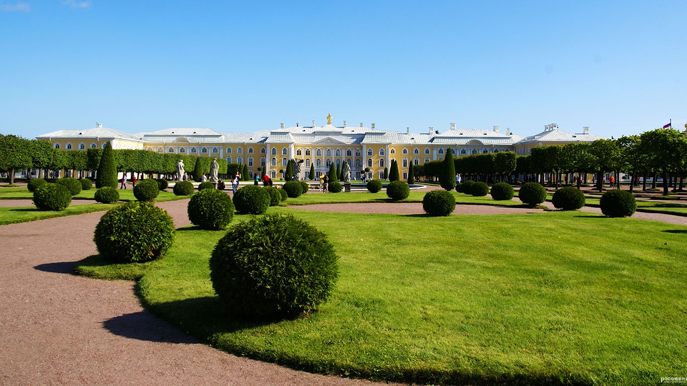
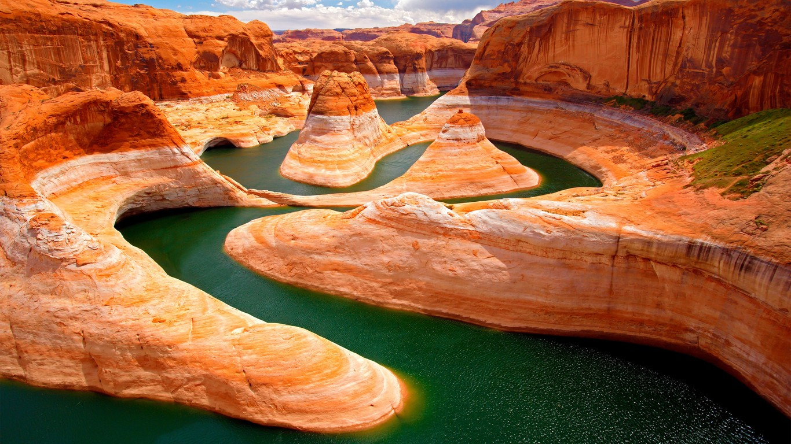
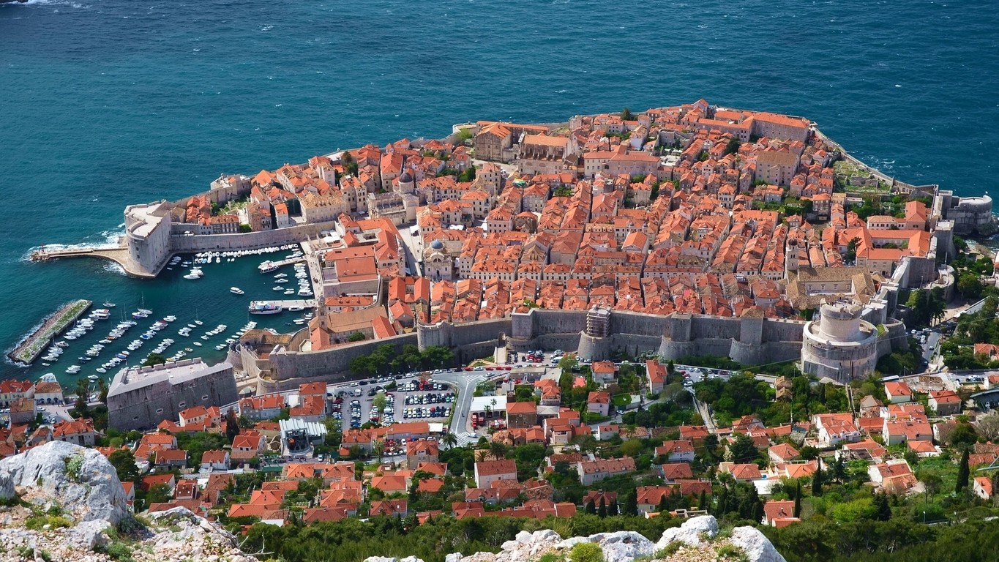
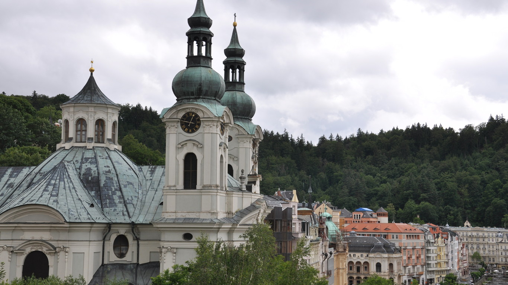
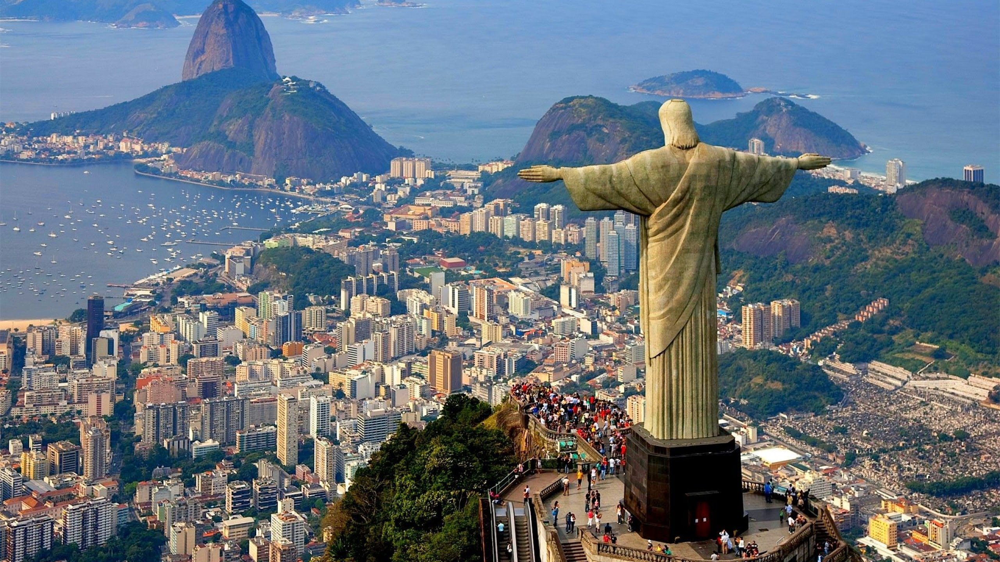

 彼得大帝夏宫(Peter the Great's Summer Palace)，又称“俄罗斯夏宫”、“彼德宫”。它位于芬兰湾南岸的森林中，它距圣彼得堡市约30公里，占地近千公顷，由瑞士人多梅尼克·特列吉尼设计，是历代俄国沙皇的郊外离宫，也是 圣彼得堡的早期建筑。第二次世界大战中，它遭到德国军队的破坏。希特勒在其占领Astoria Hotel的计划失败后，打算在这里举行新年胜利庆祝会，此举激怒了苏联当局。在1941年12月至1942年1月期间，斯大林下令炸毁这座宫殿， 以阻止德国人的庆祝活动。二战后经修复，被联合国教科文组织列为《世界遗产名录》
 黄石国家公园（Yellowstone National Park）：简称黄石公园，由美国国家公园管理局负责管理，1872年3月1日它被正式命名为保护野生动物和自然资源的国家公园，于1978年被列入世界自然遗产名录。这是世界上第一个最大的国家公园。 黄石国家公园被美国人自豪地称为“地球上最独一无二的神奇乐园”。园内交通方便，环山公路长达500多公里，将各景区的主要景点联在一起，徒步路径达1500多公里。黄石公园位于黄石河的源头，因而该公园以其历史名字而命名。将近18 世纪末期，法国猎人命名了这条河流为“黄石（Roche Jaune）”，后来，美国猎人用英语翻译了法语名字为“黄石”。而其中的黄石河被普遍认为是黄石公园大峡谷里看到的黄色岩石而命名的。
 克罗地亚共和国（克罗地亚语：Hrvatska，国际音标：/h'vɑ:tskɑ:/，英文：Croatia），简称“克罗地亚”，是位于欧洲东南部的共和国，处于地中海及巴尔干半岛潘诺尼亚平原的交界处，首都为萨格勒布。 克罗地亚在1991年从南斯拉夫社会主义联邦共和国独立，并于2009年加入北约，2013年7月1日加入欧盟。 克罗地亚是一个发达的资本主义国家。经济以第三产业为主，第二产业为副，旅游业是国家经济的重要 组成部分，克罗地亚经济基础良好，旅游、建筑、造船和制药等产业发展水平较高。足球和网球并列为克罗地亚的第一运动。
 从布拉格驱车约三个小时，就到达捷克著名的疗养胜地、有“矿泉城”之称的卡洛维伐利(Karlovy Vary)。卡罗维瓦利位于西捷克州特普拉河谷中，清澈的特普拉河(Tepla)沿山谷穿城而过，把城市一分为二， 河上的几座小桥将河两岸的城市连成一体。
 里约热内卢（葡萄牙语：Rio de Janeiro，意即“一月的河”），简称“里约”，曾经是巴西的首都（1763年－1960年），位于巴西东南部沿海地区，东南濒临大西洋，海岸线长636公里。里约热内卢是 巴西乃至南美的重要门户，同时也是巴西及南美经济最发达的地区之一，素以巴西重要交通枢纽和信息通讯、旅游、文化、金融和保险中心而闻名。救世基督像（葡萄牙语：Cristo Redentor）是一座装 饰艺术风格的大型耶稣基督雕像，位于巴西的里约热内卢，是该市的标志，也是世界最闻名的纪念雕塑之一。